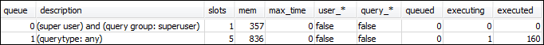
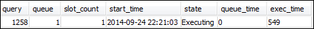
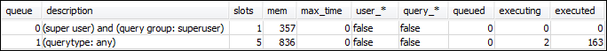
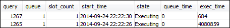

Die vorliegende Übersetzung wurde maschinell erstellt. Im Falle eines Konflikts oder eines Widerspruchs zwischen dieser übersetzten Fassung und der englischen Fassung (einschließlich infolge von Verzögerungen bei der Übersetzung) ist die englische Fassung maßgeblich.
Abschnitt 1: Erläuterung des standardmäßigen Verhaltens der Warteschlangenverarbeitung
Bevor Sie mit der Konfiguration von manuellem WLM beginnen, sollten Sie das standardmäßige Verhalten der Abfrageverarbeitung in Amazon Redshift verstanden haben. In diesem Abschnitt erstellen Sie zwei Datenbankansichten, die Informationen aus verschiedenen Systemtabellen zurückgeben. Dann führen Sie einige Testabfragen aus, um zu sehen, wie Abfragen standardmäßig weitergeleitet werden. Weitere Informationen zu Systemtabellen finden Sie unter Referenz zu Systemtabellen und Ansichten.
Schritt 1: Erstellen der Ansicht WLM_QUEUE_STATE_VW
In diesem Schritt erstellen Sie eine Ansicht mit dem Namen WLM_QUEUE_STATE_VW. Diese Ansicht gibt Informationen aus den folgenden Systemtabellen aus.
Sie verwenden diese Ansicht während des gesamten Tutorials, um zu sehen, was mit Warteschlangen geschieht, nachdem Sie die WLM-Konfiguration geändert haben. Die folgende Tabelle beschreibt die Daten, die die Ansicht WLM_QUEUE_STATE_VW ausgibt.
| Spalte | Beschreibung |
|---|---|
| Warteschlange | Die Nummer der Zeile, die für eine Warteschlange steht. Die Warteschlangennummer bestimmt die Reihenfolge der Warteschlangen in der Datenbank. |
| description | Ein Wert, der angibt, ob die Warteschlange nur für bestimmte Benutzergruppen, bestimmte Abfragegruppen oder für alle Arten von Abfragen verfügbar ist. |
| slots | Die Anzahl der der Warteschlange zugewiesenen Slots. |
| mem | Der der Warteschlange zugewiesene Speicherplatz, in MB pro Slot. |
| max_execution_time | Die Zeitspanne, für die eine Abfrage laufen kann, bevor sie beendet wird. |
| Benutzer_* | Ein Wert, der angibt, ob in der WLM-Konfiguration Platzhalterzeichen für Benutzergruppen zulässig sind. |
| query_* | Ein Wert, der angibt, ob in der WLM-Konfiguration Platzhalterzeichen für Abfragegruppen zulässig sind. |
| queued | Die Anzahl der Abfragen, die in der Warteschlange auf ihre Verarbeitung warten. |
| executing | Die Anzahl der Abfragen, die derzeit ausgeführt werden. |
| executed | Die Anzahl der Abfragen, die ausgeführt wurden. |
So erstellen Sie die Ansicht WLM_QUEUE_STATE_VW
-
Öffnen Sie Amazon Redshift RSQL und stellen Sie eine Verbindung zu Ihrer TICKIT-Beispieldatenbank her. Wenn Sie diese Datenbank nicht haben, finden Sie weitere Informationen unter Voraussetzungen.
-
Führen Sie die folgende Abfrage aus, um die Ansicht WLM_QUEUE_STATE_VW zu erstellen.
create view WLM_QUEUE_STATE_VW as select (config.service_class-5) as queue , trim (class.condition) as description , config.num_query_tasks as slots , config.query_working_mem as mem , config.max_execution_time as max_time , config.user_group_wild_card as "user_*" , config.query_group_wild_card as "query_*" , state.num_queued_queries queued , state.num_executing_queries executing , state.num_executed_queries executed from STV_WLM_CLASSIFICATION_CONFIG class, STV_WLM_SERVICE_CLASS_CONFIG config, STV_WLM_SERVICE_CLASS_STATE state where class.action_service_class = config.service_class and class.action_service_class = state.service_class and config.service_class > 4 order by config.service_class; -
Führen Sie die folgende Abfrage aus, um die Informationen in der Ansicht anzuzeigen.
select * from wlm_queue_state_vw;Nachfolgend sehen Sie ein Beispielergebnis.

Schritt 2: Erstellen der Ansicht WLM_QUERY_STATE_VW
In diesem Schritt erstellen Sie eine Ansicht mit dem Namen WLM_QUERY_STATE_VW. Diese Ansicht gibt Informationen aus der Systemtabelle STV_WLM_QUERY_STATE aus.
Sie verwenden diese Ansicht während des gesamten Tutorials zur Überwachung der laufenden Abfragen. Die folgende Tabelle beschreibt die Daten, die die Ansicht WLM_Query_STATE_VW ausgibt.
| Spalte | Beschreibung |
|---|---|
| query | Die Abfrage-ID. |
| Warteschlange | Die Nummer der Warteschlange. |
| slot_count | Die Anzahl der der Abfrage zugewiesenen Slots. |
| start_time | Der Zeitpunkt des Beginns der Abfrage. |
| state | Der Status der Abfrage, etwa „executing“. |
| queue_time | Die Anzahl der Mikrosekunden, die die Abfrage in der Warteschlange verbracht hat. |
| exec_time | Die Anzahl der Mikrosekunden, seitdem die Abfrage in die Warteschlange ausgeführt wird. |
So erstellen Sie die Ansicht WLM_QUERY_STATE_VW
-
Führen Sie in RSQL die folgende Abfrage aus, um die Ansicht WLM_QUERY_STATE_VW zu erstellen.
create view WLM_QUERY_STATE_VW as select query, (service_class-5) as queue, slot_count, trim(wlm_start_time) as start_time, trim(state) as state, trim(queue_time) as queue_time, trim(exec_time) as exec_time from stv_wlm_query_state; -
Führen Sie die folgende Abfrage aus, um die Informationen in der Ansicht anzuzeigen.
select * from wlm_query_state_vw;Nachfolgend sehen Sie ein Beispielergebnis.

Schritt 3: Ausführen von Testabfragen
In diesem Schritt führen Sie Abfragen von mehreren Verbindungen in RSQL aus und prüfen die Systemtabellen, um festzustellen, wie die Abfragen zur Verarbeitung weitergeleitet wurden.
Für diesen Schritt müssen zwei RSQL-Fenster geöffnet sein:
-
In RSQL-Fenster 1 führen Sie Abfragen aus, die den Status der Warteschlangen und Abfragen mithilfe der in diesem Tutorial bereits erstellten Ansichten überwachen.
-
In RSQL-Fenster 2 führen Sie lang andauernde Abfragen aus, um die Ergebnisse in RSQL-Fenster 1 zu ändern.
So führen Sie die Testabfragen aus
-
Öffnen Sie zwei RSQL-Fenster. Wenn Sie bereits ein Fenster geöffnet haben, müssen Sie lediglich ein zweites Fenster öffnen. Sie können für beide Verbindungen dasselbe Benutzerkonto verwenden.
-
Führen Sie in RSQL-Fenster 1 die folgende Abfrage aus.
select * from wlm_query_state_vw;Nachfolgend sehen Sie ein Beispielergebnis.
Diese Abfrage gibt ein selbstreferenzielles Ergebnis aus. Die derzeit ausgeführte Abfrage ist die SELECT-Anweisung aus dieser Ansicht. Eine Abfrage in dieser Ansicht gibt immer mindestens ein Ergebnis aus. Vergleichen Sie dieses Ergebnis dann mit dem Ergebnis, das nach dem Start der lang andauernden Abfrage im nächsten Schritt angezeigt wird.
-
Führen Sie in RSQL-Fenster 2 eine Abfrage aus der TICKIT-Beispieldatenbank aus. Diese Abfrage sollte etwa eine Minute lang dauern, so dass Sie Zeit haben, die Ergebnisse der vorher erstellten Ansichten WLM_QUEUE_STATE_VW und WLM_QUERY_STATE_VW zu untersuchen. In manchen Fällen stellen Sie möglicherweise fest, dass die Abfrage nicht lange genug ausgeführt wird, um beide Ansichten abzufragen. In diesen Fällen können Sie den Wert des Filters für
l.listiderhöhen, um die Ausführungszeit zu verlängern.Anmerkung
Um die Ausführungszeiten von Abfragen zu reduzieren und die Systemleistung zu verbessern, stellt Amazon Redshift die Ergebnisse bestimmter Abfragen in den Speicher auf dem führenden Knoten. Wenn die Ergebniszwischenspeicherung aktiviert ist, werden nachfolgende Abfragen viel schneller ausgeführt. Um zu verhindern, dass die Abfrage zu schnell ausgeführt wird, deaktivieren Sie die Ergebniszwischenspeicherung für die aktuelle Sitzung.
Um die Ergebniszwischenspeicherung für die aktuelle Sitzung zu deaktivieren, setzen Sie den Parameter enable_result_cache_for_session wie im Folgenden dargestellt auf
off.set enable_result_cache_for_session to off;Führen Sie in RSQL-Fenster 2 die folgende Abfrage aus.
select avg(l.priceperticket*s.qtysold) from listing l, sales s where l.listid < 100000; -
Fragen Sie in RSQL-Fenster 1 WLM_QUEUE_STATE_VW und WLM_QUERY_STATE_VW ab und vergleichen Sie die Ergebnisse mit Ihren früheren Ergebnissen.
select * from wlm_queue_state_vw; select * from wlm_query_state_vw;Nachfolgend sehen Sie einige Beispielergebnisse.

Beachten Sie die folgenden Unterschiede zwischen Ihren vorherigen Abfragen und den Ergebnissen in diesem Schritt:
-
WLM_QUERY_STATE_VW enthält jetzt zwei Zeilen. Ein Ergebnis bezieht sich auf die selbstreferenzielle Abfrage zur Ausführung einer SELECT-Operation für diese Ansicht. Das zweite Ergebnis ist das der länger währenden Abfrage aus dem vorherigen Schritt.
-
Der Wert in der Spalte „executing“ in WLM_QUEUE_STATE_VW stieg von 1 zu 2. Dieser Spalteneintrag bedeutet, dass derzeit zwei Abfragen in der Warteschlange ausgeführt werden.
-
Der Wert in der Spalte „executed“ wird bei jeder Ausführung einer Abfrage in der Warteschlange erhöht.
Die Ansicht WLM_QUEUE_STATE_VW ist nützlich für einen allgemeinen Überblick über die Warteschlangen und die Zahl der in jeder dieser Warteschlangen ausgeführten Abfragen. Die Ansicht WLM_QUERY_STATE_VW ist nützlich für eine detailliertere Ansicht der einzelnen Abfragen, die derzeit ausgeführt werden.